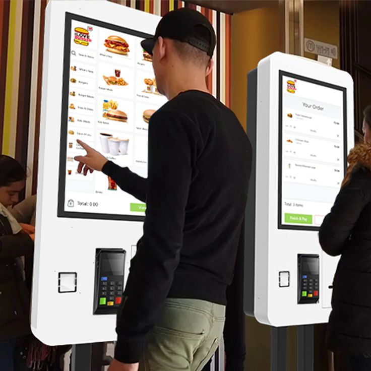
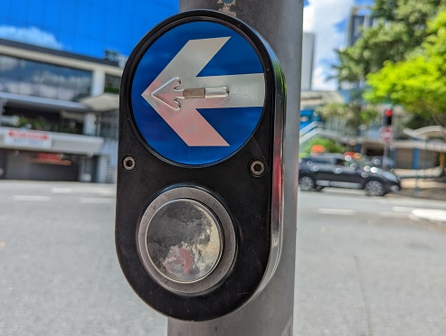
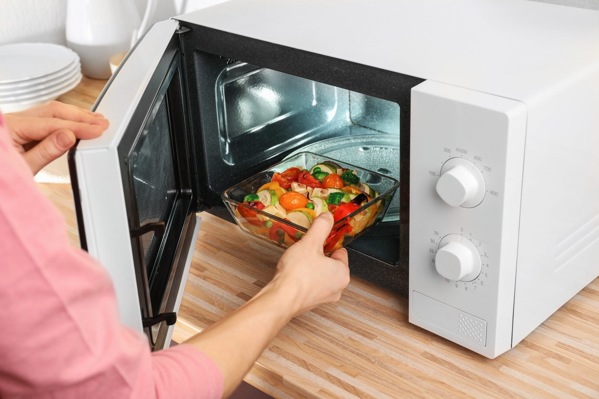
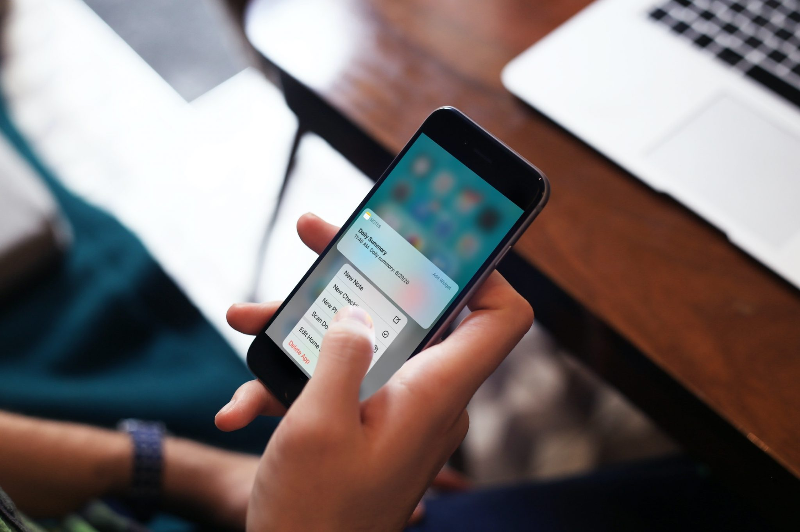
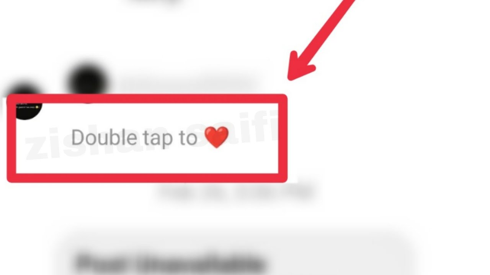

Workshop Activity:
"Human-Computer In Your Face"
Week Overview & What We Did
This week, we explored human-nonhuman interactivity through gesture-based interactions. The goal was to analyze the gestures we already use in everyday human-computer interactions and reimagine how they could be repurposed for
new, innovative interfaces.
We worked in small groups, observing and documenting existing gestures, then brainstorming speculative HCI concepts.
Our process included:
- Creating a Gesture Glossary – Identifying common gestures used in technology.
- Reimagining Under-Exploited Gestures – Thinking about new ways these gestures could be used.
- Sketching Speculative Interfaces – Imagining and visualizing futuristic interaction methods.
Gesture Glossary: Existing Interactions
We first identified gestures and behaviors that already act as triggers for human-computer interaction:
Touch-Based Interactions
- Tapping a screen → Selecting an option on phones
- Fast food kiosks → placing orders
- Pinching in/out → Zooming in or out
- Traffic light button → To cross the road
- Turning on microwave → Heating up food
- Long press → Activating additional options
- Double-tap → Liking content or waking up a screen




